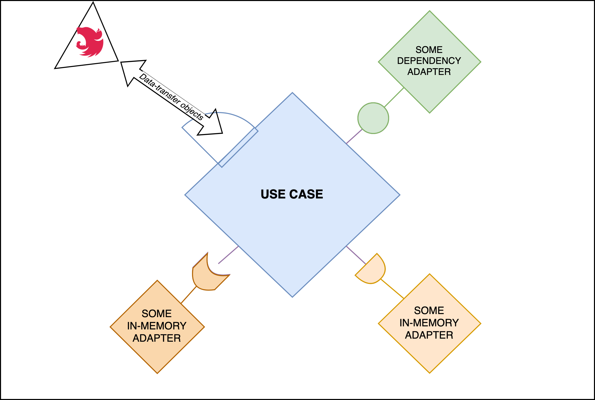

## Clean architecture Note: mes grosses baloches --- ## Context ---- ### Brand New Project Permission ---- ### In the past we got stuck in an unmaintained framework (üëãSails) ---- ### Need a code architecture allowing us to tend to quality first --- ## Brainstorming  ---  --- ## **Single Responsibility** Principle (SRP) A class should have only one reason to change. ---- ### Single Responsibility Principle (SRP) #### **DON'T DO THIS** _<small>It may look suitable for a developer to have only one method to get shifts from an hubler</small>_ ```typescript class Hubler { getShifts() { // send shifts done by hubler } } ``` Note: Je parle ici de mes grosses baloches ---- ### Single Responsibility Principle (SRP) #### **DO THIS** _<small>Getting shifts of a given hubler is not the same if we want to display the calendar or if we want to know their planning from an admin point of view as different rules may apply to retrieve them</small>_ ```typescript class HublerPlanning { getShifts() { // send shifts done by hubler } } class InstitutionHublerAvailabilities { getShifts() { // send shifts done by hubler in an institution } } ``` --- ## **Open/Closed** Principle (OCP) Software entities should be open for extension, but closed for modification. ---- ### Open/Closed Principle (OCP) #### **DON'T DO THIS** <span style="font-size: 0.8em"> ```typescript class Shift { post() { // save in DB this.notify(); } notify() { // send notification to hubler of the institution } } class HubloPoolShift extends Shift { notify() { // send notification to hublo poolers } } ``` </span> ---- ### Open/Closed Principle (OCP) #### **DO THIS** <span style="font-size: 0.8em"> ```typescript abstract class Shift { post() { // save in DB this.notify(); } abstract notify(); } class HubloPoolShift extends Shift { notify() { // send notification to hublo pool } } class NativeShift extends Shift { notify() { // send notification to hubler } } ``` </span> --- ## **Liskov Substitution** Principle (LSP) Subtypes must be substitutable for their base types. ---- ### Liskov Substitution Principle (LSP) #### LISKOV PRINCIPLE **VIOLATION** _<small>By weakening the return type</small>_ <span style="font-size: 0.8em"> ```typescript interface MissionPort { findMission(): Promise<Mission> } class MissionRepository extends MissionPort { findMission() { const mission = this.missions.find(mission => mission.id === id) // returns Promise<Mission | undefined> instead of Promise<Mission> return Promise.resolve(mission); } } ``` </span> ---- ### Liskov Substitution Principle (LSP) #### LISKOV PRINCIPLE **VIOLATION** _<small>By strengthening the preconditions</small>_ ```typescript class Mission { setIdMotif(idMotif: number) { this.idMotif = idMotif; } } class PrismaMission extends Mission { setIdMotif(idMotif: number) { if (idMotif === 1) { throw new Error('Invalid idMotif'); } this.idMotif = idMotif; } } ``` --- ## **Interface Segregation** Principle (ISP) No client should be forced to depend on methods it does not use. ---- ### Interface Segregation Principle (ISP) #### **DON'T DO THIS** ```typescript interface UserShiftService { createShift(); getShift(); fillShift(); updateShift(); } ``` ---- ### Interface Segregation Principle (ISP) #### **DO THIS** ```typescript interface HublerShiftService { getShift(); fillShift(); } interface AdminShiftService { createShift(); updateShift(); } ``` --- ## **Dependency Inversion** Principle (DIP) Depend on abstractions, not on concretions. ---- ### Dependency Inversion Principle (DIP) #### **DON'T DO THIS** _<small>For each persistence we need to redefine a whole new service even if the business logic is the same</small>_ <span style="font-size: 0.6em"> ```typescript class ShiftOfferService { constructor() { this.db = new ShiftOfferMongoDB(); } postShiftOffer() { this.db.save(); } } class HubloPoolShiftOfferService extends ShiftOfferService { constructor() { this.db = new HubloPoolShiftOfferMongoDB(); } } class TestShiftOfferService extends ShiftOfferService { constructor() { this.db = new InMemoryDb(); } } ``` </span> ---- ### Dependency Inversion Principle (DIP) #### **DO THIS** _<small>You inject the accurate persistence layer directly</small>_ <span style="font-size: 0.8em"> ```typescript interface ShiftOfferRepository { save(); } class MongoDBShiftOfferRepository implements ShiftOfferRepository { //... } class ShiftOfferService { constructor(private db: ShiftOfferRepository) {} postShiftOffer() { this.db.save(); } } ``` </span> --- # Clean architecture --- ## Details ---- ### The database _<small>Don't base your data model on how it's actually stored</small>_ ---- ### The framework _<small>Don't comply to the framework. Use the framework to comply to your business</small>_ ---- ### The interface _<small>Don't tie your business to your interface</small>_ --- ## Not details ---- ### The business rules ---- #### **The entities** - Object that contain or have easy access to business data - They implement the critical business rules that operate on that data - They are not plain-old TS objects representing the DB schema ---- #### **The use cases** - They define the way an automated system is used - They specify the inputs to be provided and outputs to be returned to the user - They describe application-specific business rules - They don't know in which environment they are running --- ## The dependency rule <img src="./images/clean-archi-1.png" height="500"> --- ## A use-case, step by step ---- <!-- .slide: data-transition="fade" -->  ---- <!-- .slide: data-transition="fade" -->  ---- <!-- .slide: data-transition="fade" -->  ---- <!-- .slide: data-transition="fade" -->  ---- <!-- .slide: data-transition="fade" -->  ---- <!-- .slide: data-transition="fade" -->  ---- <!-- .slide: data-transition="fade" -->  ---- <!-- .slide: data-transition="fade" -->  --- ## **Entities**, grosso modo  --- ## Things to keep in mind ---- ### Readability _<small>Prosaic code is easier to read and understand</small>_ ---- ### Ubiquitous language _<small>Use the same language in your code as in your business</small>_ > Use a glossary to be sure everybody use the same words --- # Benefits of Clean Architecture --- ## **Flexibility** Easily adapt to new requirements without significant rework. > "Embracing Clean Architecture and its no coupling philosophy means we can easily add or change any business rule" --- ## **Testability** Independent layers allow for testing of business logic without UI, database, or external dependencies. > "Clean Architecture allow us to use real implementations suitable for our tests that preserve all business rules instead of meaningless mocks" --- ## **Maintainability** Easily adapt to changes in the ecosystem. > "Embracing Clean Architecture means we can easily update or change any third-party dependency" Note: Only god can judge me. --- ## **Team Alignment** Code is the best documentation. > "The use of prosaic code and ubiquitous language within the business rules allow more clinical and standard specifications of the features before development and improve understanding for non-initiated people, techy or not techy." Note: Clean Architecture's structured layers significantly improve the readability and navigability of our codebase. This clarity is especially beneficial for onboarding new team members and facilitating cross-team collaboration. When everyone can easily understand how the permissions framework fits within the larger system, it accelerates development and enhances the quality of our software. It's about making our codebase more accessible and manageable for everyone involved. --- ### Implementation #### Code Organization: **Base organization**  <img src="./images/clean-archi-1.png" alt="image" width="40%" height="auto" style="margin:0 0 0 4em"> --- ### Implementation #### Code Organization: **Business logic**  <img src="./images/clean-archi-1.png" alt="image" width="40%" height="auto" style="margin:0 0 0 4em"> ---- #### Implementation ##### Business logic: **Entity example** <span style="font-size:0.75em;"> > - Not a plain-old JS object representing a schema > - Encapsulation & SOLID → OPEN-CLOSE Principle (Software entities should be open for extension, but closed for modification) > - Implement critical business rules that operates on business data ```typescript // permission.entity.ts export abstract class Permission extends SoftDeleteEntity { // [...] protected _category: PermissionCategory get category() { return this._category } organize(category: PermissionCategory) { if (category.isMainCategory()) { throw new InvalidPermissionCategoryHierarchyError() } this._category = category } } ``` </span> ---- #### Implementation ##### Business logic: **Use case example** > - Prosaic language > - Describe application-specific business rules > - Delegate critical business rules to entities > - SOLID → ISP (No client should be forced to depend on methods it does not use), DIP (Depend on abstractions, not on concretions) <span style="font-size:0.7em;"> ```typescript // create-permission.use-case.ts @Injectable() export class CreatePermission { constructor(/** Dependency injection of port implementations, builder ...*/) {} async execute( input: CreatePermissionInput, ): Promise<PermissionDetailedOutput> { const { id, scope, categoryId } = input const { existingScope, existingCategory } = await this.retrieveData(scope, categoryId) const newPermission = this.buildPermission(id, existingScope) newPermission.organize(existingCategory) const createdPermission = await this.permissionPort.create(newPermission) return PermissionMapper.toDetailedOutput(createdPermission) } private async retrieveData(scope: string, categoryId: number) { const [existingScope, existingCategory] = await Promise.all([ this.scopePort.findSingleById(scope), this.categoryPort.findById(categoryId) ]) return { existingScope, existingCategory } } private buildPermission(id: string, scope: Scope): Permission { return this.permissionBuilder.init().withId(id).withScope(scope).build() } ``` </span> ---- #### Implementation ##### Business logic: **Port example** > - Decoupled: Port, can be used with various adapters as long as interface is respected <span style="font-size:0.8em;"> ```typescript // Use Case ← PORT (interface) → Repository // permission.port.ts export interface PermissionPort { /** * @throws { PermissionNotFoundError } */ findById(id: string): Promise<Permission> } ``` </span> ---- #### Implementation ##### Business logic: **Don't do this** <span style="font-size:0.8em;"> ```typescript // grant-user-permission.use-case.ts // [...] await this.userPort.exists(userId) const permission = await this.permissionPort.findById(permissionId) const realScopeId = UserPermission.getFullScopeIdBasedOnPermissionScope({ relativeScopeId: relativeScopeId, permissionScope: permission.scope, }) const scope = await this.scopePort.findSingleById(realScopeId) let userPermission = await this.userPermissionPort.findFirst({ scope, userId, }) if (userPermission) { let permissionHasBeenAdded = false if (!userPermission.permissions.some((p) => p.id === permission.id)) { userPermission.permissions.push(permission) permissionHasBeenAdded = true } if (permissionHasBeenAdded) { await this.userPermissionPort.update(userPermission) } } else { userPermission = this.userPermissionBuilder .init() .withPermissions([permission]) .withScope(scope) .withUserId(userId) .build() await this.userPermissionPort.create(userPermission) } return UserPermissionMapper.toSpecificPermissionOutput( permission, true, scope, userId, ) // [...] ``` </span> ---- #### Implementation ##### Business logic: **Do this** <span style="font-size:0.8em;"> ```typescript // grant-user-permission.use-case.ts // [...] await this.checkUserExists(userId) const { userPermission: existingUserPermission, permission, scope } = await this.retrieveData(userId, permissionId, relativeScopeId) if (existingUserPermission) { const permissionHasBeenAdded = existingUserPermission.injectPermission(permission) if (permissionHasBeenAdded) { await this.userPermissionPort.update(existingUserPermission) } } else { const newUserPermission = this.buildUserPermission({ userId, permission, scope }) await this.userPermissionPort.create(newUserPermission) } return UserPermissionMapper.toSpecificPermissionOutput(permission, true, scope, userId) // [...] ``` </span> --- ### Implementation #### **Infrastructure**  <img src="./images/clean-archi-1.png" alt="image" width="40%" height="auto" style="margin:0 0 0 4em"> ---- ### Implementation #### Infrastructure: **Reminder (framework)** <img src='./images/usecases/4-usecase.png' width='70%'/> ---- #### Implementation ##### Infrastructure: **Controllers** > - DRY (decorator reusability) > - Declarative (meaningfull names for decorators, clear role of each) > - Controller: answers 3 questions (no other responsability), > - which kind of request can pass through. > - which is the form of the data structure received. > - which is the form of the data structure to be sent. <span style="font-size:0.7em;"> ```typescript // reorganize-permission.controller.ts @ApiTags('Permissions') @UseInterceptors(PermissionErrorInterceptor) @UseGuards(SuperAdminAuthGuard) @Controller('permission') export class ReorganizePermissionController { constructor(private readonly useCase: ReorganizePermission) {} @ApiRoute(/** */) @ApiBearerAuth() @Patch(':id/reorganize') async reorganizePermission( @Body() toUpdate: ReorganizePermissionBodyDto, @Param() params: ReorganizePermissionParamsDto, ) { const res = await this.useCase.execute({ ...toUpdate, ...params }) return plainToInstance(PermissionDetailedResponseDto, res) } } ``` </span> ---- #### Implementation ##### Infrastructure: **Controllers** > Small pause: implemented different interesting patterns & tools ^^ > - We choose a "blacklist" approach to avoud the `@Expose` & `@Exclude` verbose decorators > - Nestjs Plugin to avoid `@ApiProperty` decorators <span style="font-size:0.7em;"> ```typescript export class ReorganizePermissionBodyDto { @IsInt() @Max(2147483647) // int4 max constraints (postgres) @Min(0) // should be -2147483647, but we take 0 since it will not be necessary newCategoryId: number } export class ReorganizePermissionParamsDto { @IsString() @IsNotEmpty() id: string } ``` </span> ---- ### Implementation #### Infrastructure: **Reminder (adapters & implementation)** <img src='./images/usecases/4-usecase.png' width='70%'/> ---- #### Implementation ##### Infrastructure: **Persistence** > - Adapter (respects the port interface) > - It interacts with the "external world" & returns a comprehensive expected data structure > - Here, an interesting pain point: in this case, a prisma object returned, how to convert it to an entity-business-like object as output <span style="font-size:0.7em;"> ```typescript // permission.port.impl.ts @Injectable() export class PermissionPortImpl implements PermissionPort { constructor(private readonly permissionRepository: PermissionRepository) {} async findById(id: string): Promise<Permission> { const permission = await this.permissionRepository.findPermissionById(id) if (!permission) { throw new PermissionNotFoundError(id) } return plainToInstance(PrismaPermission, permission) } // [...] } ``` </span> ---- #### Implementation ##### Infrastructure: **Persistence, before we continue...** > Knowing that... > - getters, setters in JS are not singly inherited <span style="font-size:0.7em;">(if one getter/setter exists and you decalre the missing one, it will not inherit, it will overwrite and ignore)</span> > - Prisma & transformers needs the schema properties getters & setters both to be declared How did might we have solved it? > 1. We did it in Rust > 2. Pushed a PR to nodejs org > 3. Trick JS > 4. La r√©ponse D ü§î <!-- ---- #### Implementation ##### Infrastructure: **Persistence, before we continue** <span style="font-size:0.7em;"> *To Know:* </span> - <span style="font-size:0.7em;"> getters, setters in JS are not singly inherited (if one getter/setter exists and you decalre the missing one, it will not inherit, it will overwrite and ignore)</span> - <span style="font-size:0.7em;"> Prisma, the ORM we are using (db detail) </span> - <span style="font-size:0.7em;"> needs the schema properties getters & setters both to be declared </span> - <span style="font-size:0.7em;"> if schema properties are not explicitly exposed, it needs a toJSON method to expose them </span> --> ---- #### Implementation ##### Infrastructure: **Persistence** > - Prisma, the ORM we are using (db detail) > - Needs the schema properties getters & setters both to be declared > - Prisma compliant toJSON method allowing to map entity into prisma accepted fields <span style="font-size:0.7em;"> ```typescript // permission.prisma.entity.ts export class PrismaPermissionBase extends Permission implements PrismaAdapter { get categoryId() { return this._category?.id } set category(value: PrismaPermissionCategory) { this._category = plainToInstance(PrismaPermissionCategory, value) } // prisma compliant toJSON method allowing to map entity into prisma accepted fields toJSON() { id: this._id, scopeId: this._scope.displayFull(), categoryId: this._category.id, deletedAt: this._deletedAt, } } export class PrismaPermission extends GetterSetterInheriter( PrismaPermissionBase, ) {} ``` </span> ---- #### Implementation ##### Infrastructure: **Mixins exemple** > - Getters, setters in JS are not singly inherited <span style="font-size:0.7em;">(if one getter/setter exists and you decalre the missing one, it will not inherit, it will overwrite and ignore) </span> > - So, why not to play with JS to achieve this? > - Tool that builds the parent/child tree and recovers getters/setters & and match them in an "inherited way" üòÆ </span> <span style="font-size:0.6em;"> ```typescript // prisma-injector.mixin.ts export const GetterSetterInheriter = <TBase extends Constructor>(Base: TBase ) => { return class extends Base { constructor(...args: any[]) { super(...args) this.importGettersAndSetters() } getGettersAndSetters = (prototype: Constructor) => { // [...] const findAllGettersAndSetters = ( currentPrototype: Constructor, aggregator: Record<string, { get?: () => any; set?: (_v: any) => void; hasPrivateDeclaration?: boolean }> = {} ) => // [...] } importGettersAndSetters = () => { const extendedClassPrototype: Constructor = Object.getPrototypeOf(this) const gettersSetters = this.getGettersAndSetters(extendedClassPrototype) // [...] } } } ``` </span> --- ### Implementation #### **Tests**  ---- ### Implementation #### Tests: **Reminder (adapters & implementation)**  ---- ### Implementation #### Tests: **Doubles**  ---- #### Implementation ##### Tests: **Adapters, before we continue...** > Knowing that... > there are several strategies to test where interactions with a db is needed like mocking (fake calls/results), in memory dbs, infrastructure db to test Which strategy do you thing we might have taken? > 1. Who tests nowadays? > 2. Mock > 3. In memory db > 4. Infrastructure db > 5. La r√©ponse D ü§î ---- #### Implementation ##### Tests: **Doubles → Ports** > - Adapter (respects the port interface) > - In memory storage of state (entities) <span style="font-size:0.7em;"> ```typescript // permission.port.in-memory.ts export class InMemoryPermissionPort extends InMemoryBasePortMixin<Permission>({ NotFoundError: PermissionNotFoundError, AlreadyExistsError: PermissionAlreadyExistsError, }) implements PermissionPort { findAll(): Promise<Permission[]> { return Promise.resolve(this.entities) } } ``` </span> <!-- ---- #### Implementation ##### Tests: **Doubles → Ports** <span style="font-size:0.7em;"> ```typescript // base.port.in-memory.ts const buildInMemoryPort = <EntityType>(args: { NotFoundError: typeof DomainError AlreadyExistsError?: typeof DomainError }) => { class InMemoryBasePort { constructor(public entities: EntityType[]) { this.entities = entities } // [...] export const InMemoryBasePortMixin = <EntityType>(args: ...) => buildInMemoryPort<EntityType>(args) ``` </span> --> ---- #### Implementation ##### Tests: **Use case example** > - No mocks, in memory state üòÆ > - Exemple, preparation of getall permissions > - We prepare it by first creating a category which is needed on a permission, > - then building the permission stub > - finally, assigning it to the in-memory db <span style="font-size:0.6em;"> ```typescript describe('GetAllPermissionsUseCase', () => { let permissionPort: InMemoryPermissionPort let useCase: GetAllPermissions describe('execute', () => { beforeEach(() => { const parentCategory = PermissionCategoryStubFactory.createMainCategory({ id: 1, }) permissionPort = new InMemoryPermissionPort([ new PermissionStub({ id: 'permission-id', scope: new ScopeStub({ id: 'permission-name' }), category: new PermissionCategoryStub({ id: 2, labelKey: 'old-category-name', parentCategory: parentCategory, }), }), ]) useCase = new GetAllPermissions(permissionPort) }) // [...] ``` </span> --- ### The End ##### We hope you liked it .. üò¥ .. time to wake up Q & A ?